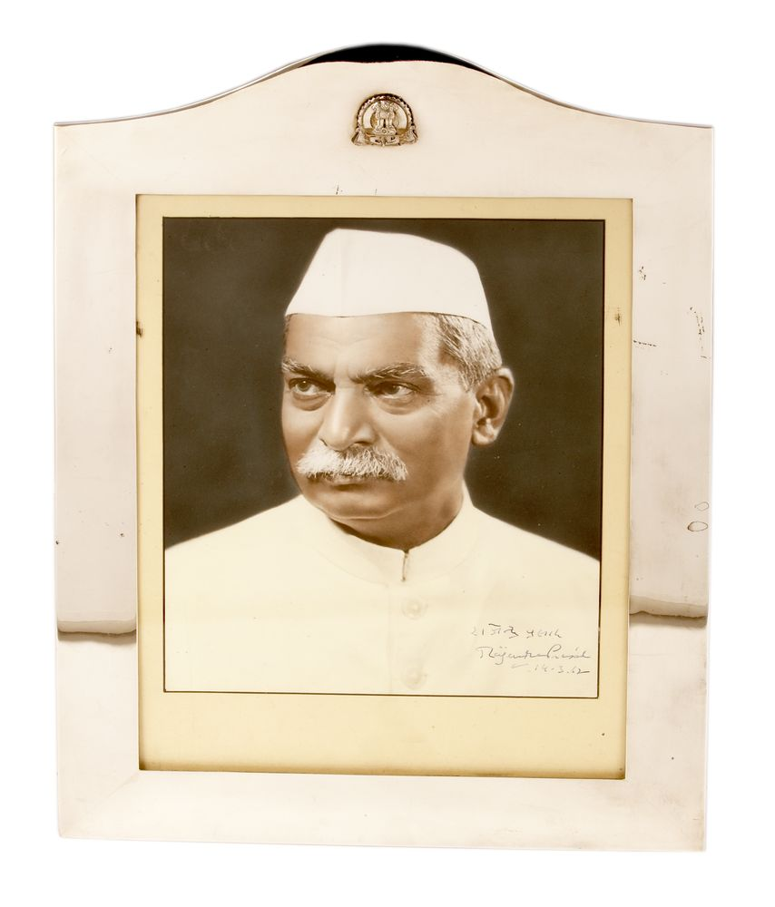

“
We are a sovereign body, but let us approach our task ... in the spirit of negotiators.
◎

President · Constituent Assembly
Runs the election, controls the amendment dispute and schedules completion of the Resolution.
We are a sovereign body, but let us approach our task ... in the spirit of negotiators.
Filter a long sitting without losing chronology. Portraits appear only where the archive has a verified or reviewed visual asset.
Steering election → minority and liberty arguments → Jayakar withdrawal → popular sovereignty and socialist guarantees.